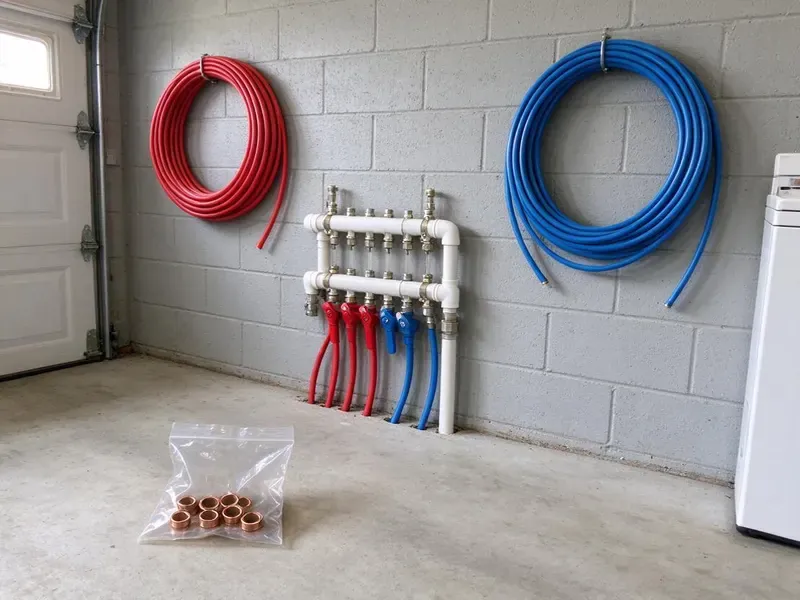

Water Line Installation in Barre, VT
We install copper, PEX and HDPE service lines in Barre, VT, handling the locates, the dig and the meter tie-in.
- Same-Day Leak Response
- Trenchless Options
- Permits Handled
- PEX, Copper and HDPE
Main Water Line Replacement in Barre, VT
Leaking or corroded main? We can look at it this week.
Main Water Line Replacement in Barre, VT
CKV Plumbing knows soil can be hard on buried pipe, from rocky fill that dents it to clay that shifts as it wets and dries. Clay soils in river valleys drain poorly and can hold water against foundations, so sump pumps are common in low-lying homes. We match the pipe and the bedding to your lot, upsize when your fixture count calls for it, and leave the yard graded. Rocks never touch the pipe.
Some of what we do:
- Trenching and rock breaking with sand bedding
- Main water line replacement and new installs
- HDPE service lines with tracer wire

Additional Plumbing Installation Services in Barre, VT
We install water heaters, pumps, lines, and fixtures across Barre, VT with careful, permitted work that passes inspection the first time.


Customers
Why Choose CKV Plumbing for Water Line Installation in Barre, VT?
Depth, bedding and fittings are where a cheap water line job cuts corners. None of those get skimped on here, because a rock left against the pipe or a fitting not rated for burial can start leaking five years in and run for months before anyone notices the bill. Sand costs very little.
- Clean Restoration, We backfill, compact and regrade so the yard looks the way it did.
- Accurate Sizing, We size the line by fixture count and distance so pressure holds up.
- Licensed & Insured, Every plumber is licensed and insured, so the work is accountable.
Citywide Coverage
Any part of Barre gets the full setup, with trenching equipment, pipe and fittings on the truck. Meter work gets scheduled with your water provider, including the shutoff window, so you know exactly when the water goes off and roughly when it comes back on. Usually it is a few hours.
Experienced Team
Every plumber on our team is licensed and insured. They keep up with code changes on water service materials, including which PEX and HDPE products are approved for burial and how tracer wire has to be installed with non-metallic pipe under Vermont plumbing standards. Code changes every few years.
Safety-First Approach
We call 811 before every dig, no exceptions. Gas and electric lines get marked first, and our crews hand dig within the tolerance zone around each mark instead of trusting the excavator bucket to find the line gently. A gas line hit is serious.
Trusted Certified Barre Plumbing Services Professionals
At CKV Plumbing, we are proud to offer certified plumbing services throughout Barre, VT. Credentials matter in this trade. Our plumbers hold recognized industry credentials, and they follow strict safety and quality rules on every repair, installation and maintenance call we run.
Call Us Now PHCC Plumbing Contractor Recognition
PHCC Plumbing Contractor Recognition Better Business Bureau (BBB) Accreditation
Better Business Bureau (BBB) Accreditation Angi Certified Pro
Angi Certified Pro ISO 9001 Quality Management Certification
ISO 9001 Quality Management CertificationThe Water Line Work We Do in Barre, VT
New Construction Water Line Installation in Barre, VT
Plan review comes first on new construction. We check the fixture units and the irrigation load, pick the line size, and work with your builder so the service, the interior distribution lines and the stub-outs all line up with the framing in Barre, VT. We time the rough-in to the framing crew.

Water Line Upgrades & Relocation in Barre, VT
Moving a line is common before an addition, a pool or a new driveway goes in. The service gets rerouted around the new footprint, upsize it if the added fixtures call for more flow, and tie it back into your existing shutoff so the rest of the plumbing in Barre, VT stays untouched. Call before the concrete is poured.
Copper Water Line Installation in Barre, VT
Copper service lines last a long time when the soil and water agree with them. We use Type K for buried runs, joined with flare or compression fittings rated for underground use, and we sleeve the pipe where it passes through the foundation wall so it cannot rub against concrete in your Barre, VT home. It costs more than PEX.
New Construction Water Service Lines in Barre
Meter size sets the upper limit on what any service line can deliver. A 3/4 inch or 1 inch line covers most houses, while larger homes with pools and big irrigation systems often need 1-1/4 inch, so we confirm the meter with your water provider before choosing the pipe for a new build in Barre. Undersizing is hard to fix later.
Water Line Pressure Testing and Code Compliance in Barre, VT
Every new line gets a hydrostatic pressure test before the trench is closed. The line is capped and pumped above normal working pressure, then watch the gauge for any drop, because a leaking fitting is easy to fix with the pipe exposed and very hard to find once it is buried in Barre, VT. A steady needle means a tight line.
Trenchless Water Line Installation in Barre
Pipe pulling replaces the old line by dragging new HDPE through the path it already took. Two small pits get dug, one at each end, attach the new pipe to a cable, and pull it through while a bursting head splits the old pipe out of the way, which leaves your lawn in Barre mostly intact. Rock and some soils rule it out.
Emergency Water Line Repair & Installation in Barre
A burst main floods the yard and drops pressure in the house to almost nothing. First we close the curb stop and find the break, then decide on the spot whether a repair coupling will hold or whether the line has failed enough times that replacing it is the cheaper move in Barre. Water usually comes back the same day.

Trenchless Water Line Boring in Barre
Driveways and mature trees are good reasons to bore instead of trench. We open a small pit at each end of the route, then run a boring tool under the obstacle and pull new HDPE or PEX back through the hole, so the concrete and the root zone in your Barre yard stay put. Dense rock can stop a bore.
Water Line Installation Near Me in Barre, VT
Local crews respond faster to a burst service line. We keep PEX and copper fittings on the trucks, so a broken main in Barre can often be dug up, repaired or replaced, and pressure tested the same day you call (802) 209-5139. Emergencies get moved up.
Planned upgrades and urgent replacements both get the same crew in Barre, VT. Most residential lines go in over one or two days, plus the wait for utility locates and the inspection, and we give you that full timeline before anyone schedules a machine. Rain sometimes adds a day.
CKV Plumbing at a Glance
- Fully licensed plumbing team covering Barre, VT
- 24/7 emergency service with same-day scheduling
- Clear written estimates, no hidden fees
- 4.8-star rated by 553+ Vermont customers
Barre Map
Barre Information
- Population
- 8,387
- Area codes
- Local
- Service area
- Barre and towns within a 40 mile drive
- Nearby
- Montpelier, St. Johnsbury, Middlebury, Essex Junction
Clay soils in river valleys drain poorly and can hold water against foundations, so sump pumps are common in low-lying homes. In Barre, VT, a carefully installed water line is the best defense against hidden yard leaks and foundation damage.
Talk to a Plumber
Reach out to CKV Plumbing for honest, reliable plumbing from people who know the trade in Barre, VT.
Our Specialized Plumbing Services in Barre, VT
At CKV Plumbing, you get every kind of plumbing service from one company across Barre, VT. From leak detection to full system installs, our team works fast and charges fair prices on homes and commercial properties alike. Here are the core services we offer:


What a Water Line Install Looks Like in Barre, VT
Here is how we take a water line from estimate to a restored, regraded yard.
Request a Quote
Call (802) 209-5139 to set up a visit. We look at your current line and give you a written quote with material options.
Site Assessment
We walk the route, check for buried utilities and pick the shortest path that avoids concrete and trees.
Permitting & Prep
CKV Plumbing pulls the permit in Barre and calls 811. After the locates are marked, we open the trench.
Frequently Asked Questions About Water Line Installation in Barre
Expect a wide range in Barre, VT, roughly $2,500 to $8,000 for a typical main line replacement. Pipe material and run length make the biggest difference, followed by trench depth and access, and new construction lines are usually priced as part of the full plumbing package with the builder. You get a written number after we walk the site.
Our water line installs carry a warranty on parts and labor. You see the warranty terms on your estimate, and the pipe manufacturer adds its own long coverage, which on PEX and HDPE often runs decades when the pipe is installed to spec. We keep the install records.
PEX and copper are the usual picks, with HDPE on long runs. PEX handles ground shifts and does not corrode, and copper is rigid, durable and resists bacterial growth, which is why plenty of owners still prefer it for buried service. Town water systems in Barre and other communities are generally reliable, but older service lines can add rust and discolored water. Budget and water chemistry usually decide it.
Type K copper, PEX and HDPE are all approved for buried service. PEX and HDPE flex and have fewer joints, while copper gives you rigidity and puncture resistance.
Most jurisdictions require a permit and an inspection for a new or replaced service line. The permit and the inspection are part of our job.
Clay soils in river valleys drain poorly and can hold water against foundations, so sump systems are common in low-lying homes. Soil that shifts and settles puts steady stress on buried pipe. Flexible pipe like PEX is popular for exactly that reason, and why sand bedding and careful backfill matter as much as the pipe itself when the ground around it keeps moving. Bedding protects the pipe.
For PEX we usually install Uponor, Viega or Zurn systems with fittings from the same maker. Our copper meets ASTM standards for buried service, and we pick the brand and pipe grade based on your run length, your soil and what your local code allows for direct burial in Barre. Mixing brands can void warranties.
Manufacturers back PEX and HDPE with long warranties, and copper has decades of history. Our installation labor is warrantied too, and we go over the terms with you before work starts.
What Our Customers Say About Our Plumbing Experts

Megan L.
Our upstairs tub drained so slowly that every shower turned into a bath. CKV Plumbing pulled a wad of hair out of the stopper and then snaked the line past the trap. Three months later it still drains fast.
Drain Cleaning · St. Johnsbury, VT
Patricia H.
We had a slab leak that two other companies could not find. CKV Plumbing located it in under an hour with a listening device. They rerouted the line through the attic instead of breaking up the floor, so we kept our kitchen tile.
Slab Leak Repair · Essex Junction, VT
Jessica T.
We were adding a gas range in a kitchen remodel and needed a new line run from the meter. The plumber pulled the permit, ran the pipe through the crawl space, and had it inspected and approved within the week.
Gas Line Repair · St. Johnsbury, VT
Carlos V.
Our house still had galvanized pipe, and upstairs the shower was a trickle. The crew repiped everything in PEX over three days and patched every drywall hole before they left. The pressure difference is night and day.
Repiping · Montpelier, VTEmily R.
The shutoff valve under our kitchen sink snapped off in my hand on a Sunday morning. CKV Plumbing had someone out by early afternoon. He replaced both angle stops with quarter turn valves and showed me where our main shutoff was, which I honestly did not know.
Plumbing Repair · South Burlington, VT
Kevin O.
Before buying our house I paid for a sewer camera inspection. CKV Plumbing found a belly in the line that held standing water about forty feet from the cleanout. We used the video to get the sellers to fix it before closing.
Sewer Camera Inspection · South Burlington, VT